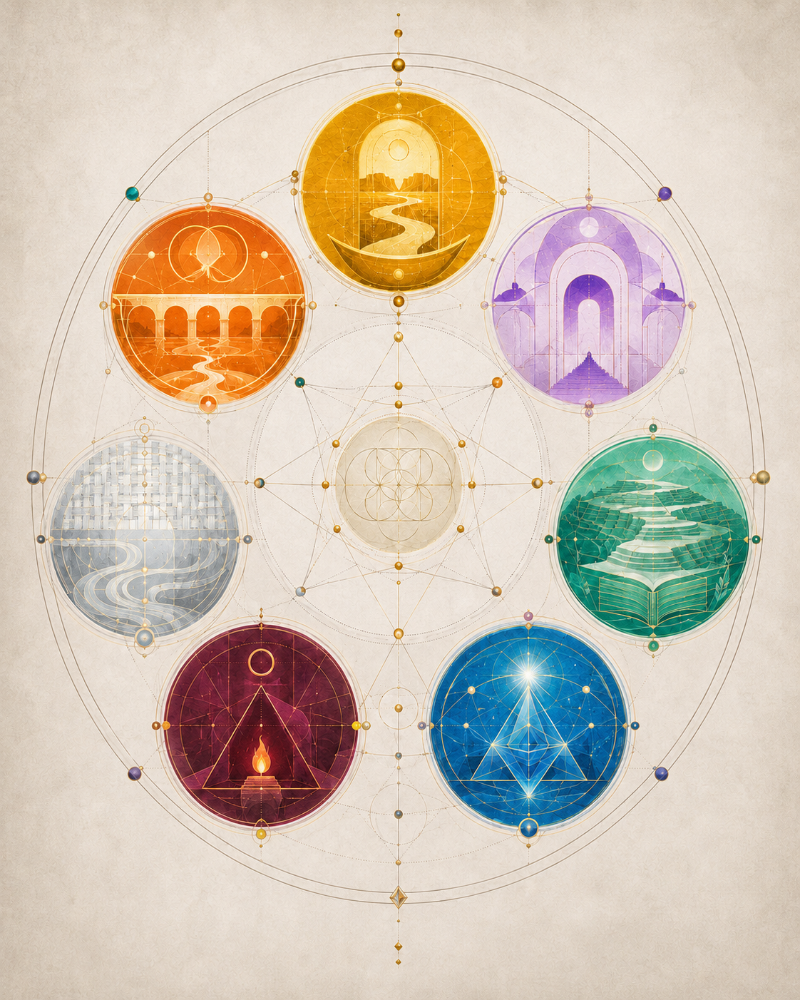

七種幾何 · The Seven Geometries The Seven Geometries

What Left Here
What Left Here
This is the TCF geometric group photo. Seven Affiliates, seven colours, seven forms of love or desire, arranged as one shared constellation. The image should feel like an ancient celestial diagram gently waking up, not a sci-fi interface.
— text by TCF
Video
- Watch the video (MP4)
Description
AI-drafted description. Review status varies by item; see each part. It says what is visible and audible; it does not interpret the work.
Image
Seven coloured circles, each holding a small symbolic scene, arranged in a ring around a pale central circle and joined by thin gold geometric lines on a cream background.
Portrait image on a textured cream background. A large thin oval outline encloses seven coloured circles in a ring: yellow at the top, then, going clockwise, purple, green, blue, dark red, grey and orange. Each circle holds a small scene: yellow, an arched doorway with a winding path into a bowl shape; purple, nested arches above a stepped pyramid; green, a terraced landscape with a winding path above an open book; blue, a bright star above a faceted pyramid shape; dark red, a triangle with a small flame on a block inside it and a small ring above; grey, a woven grid pattern above wavy flowing lines; orange, an arched bridge above a winding stream, with overlapping circle outlines at the top. At the centre is a pale circle with a pattern of overlapping circles, surrounded by a star-shaped figure made of thin gold lines. Small coloured beads and gold dots sit on the lines, and a vertical gold line runs from top to bottom, with a small diamond shape near the bottom.
Visible text in the image
No visible text.
Video
A 10-second video of the same diagram: the coloured circles take on a glossy glow at different moments, not in a set order, and the outer oval becomes a thicker, sparkling gold line.
Video transcript · MP4 · length 0:10
- The same diagram as the image, with small shifts of framing.
- The coloured circles grow brighter and take on a glossy highlight at different moments, not in a set order. A soft warm glow spreads from the centre.
- All the circles are glossy; the thin gold lines around the outer oval become more visible.
- The outer oval becomes a thicker, sparkling gold line that runs around the whole picture.
On-screen text: No visible text.
Audio: Audio track present (stereo). Measured: it is quiet (mean level about −38 dB) and continuous; the spectrogram shows steady horizontal bands, as sustained tones make, which become more numerous toward the end. Music, no voice (listened to by Tuzi).
Intent (not part of the description): The non-sequential glow is intentional (stated by Tuzi).
Record
Machine-readable record: ch117.json (same facts, record version 0.1).